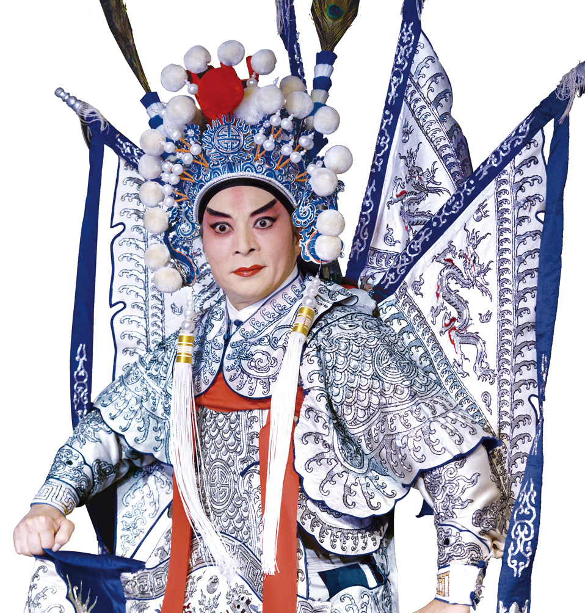
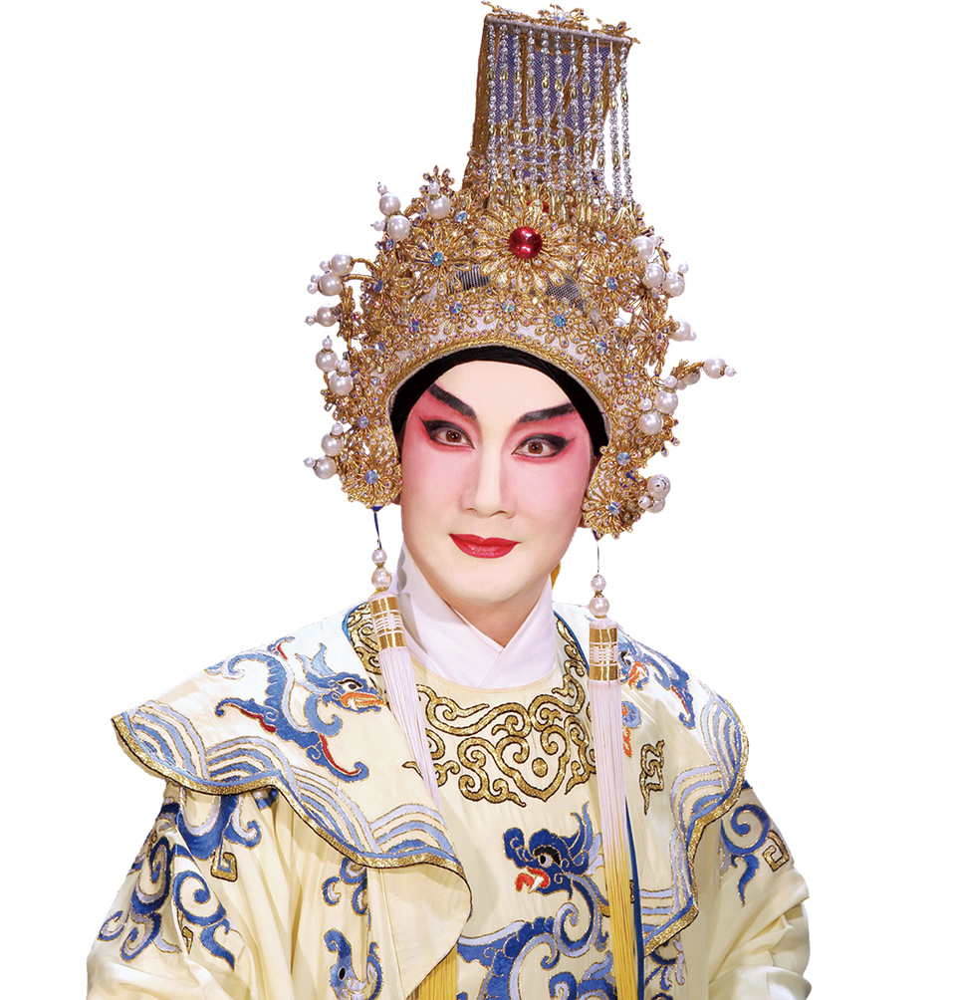
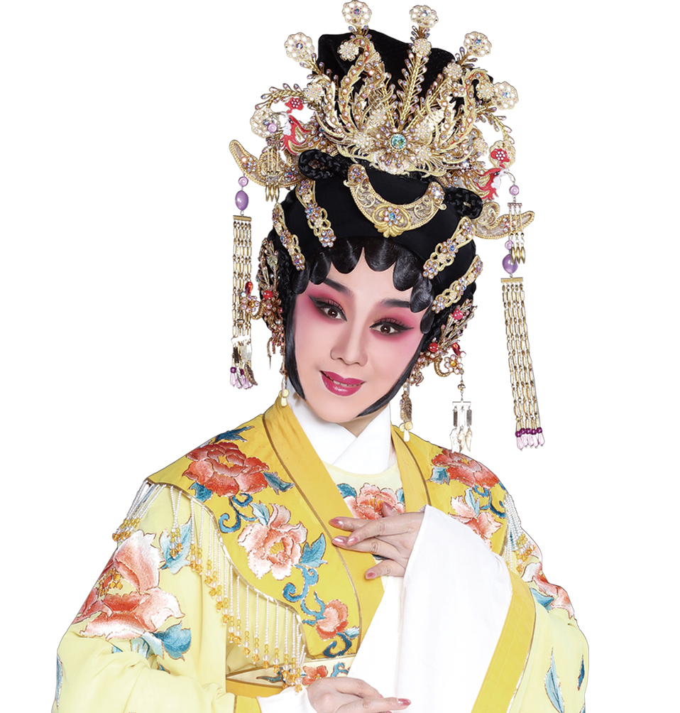

名家大师

欧凯明老师
欧凯明，国家一级演员，师承粤剧艺术大师红线女，工文武生。非物质文化遗产项目代表性传承人，中国戏剧梅花奖“二度梅”、上海白玉兰奖获得者，中国戏曲学院客座教授，享受国务院专家津贴。现任广州粤剧院有限公司艺术总监兼总经理。广东省第十二届政协委员，广州市第十一届政协委员，中国戏剧家协会常务理事，广东省戏剧家协会副主席、广东粤剧促进会副会长、广东省繁荣粤剧基金会理事、广州市振兴粤剧基金会副理事长，广州市戏剧家协会主席。
红线女老师
红线女(1925-2013)，原名邝健廉，祖籍广东开平，出生于广州西关。著名粤剧艺术大师，粤剧红派表演艺术创始人。非物质文化遗产项目粤剧代表性传承人。红线女从艺七十多年来，主演了上百部脍炙人口的粤剧和近百部电影，塑造了一系列性格迥异、栩栩如生的女性艺术形象，她所创造的红腔和红派表演艺术代表着粤剧旦角艺术的最高成就，她是中国戏曲艺术的代表，也是中华文化历史上一座不朽的丰碑。

黎骏声老师
黎骏声，国家一级演员，师承粤剧艺术大师新马师曾，艺从粤剧艺术大师红线女，工文武生。中国戏剧梅花奖获得者，广州市级非物质文化遗产项目代表性传承人。现任广州粤剧院有限公司党总支副书记，广东八和会馆主席、广东粤剧促进会副会长、广州市戏剧家协会副主席。
陈韵红老师
陈韵红，国家一级演员，中国戏剧梅花奖、文化部首届“文华个人表演奖”获得者。师从著名表演艺术家陈小汉，得到粤剧大师红线女、林小群、以及陈小华老师的亲身指导。曾荣获文化部中国小百花金奖，第二届中国艺术节优秀演出奖，第四、第五届广东省艺术节一等奖，广东首届戏剧家突出贡献奖，广东省第五届鲁迅文艺奖。
